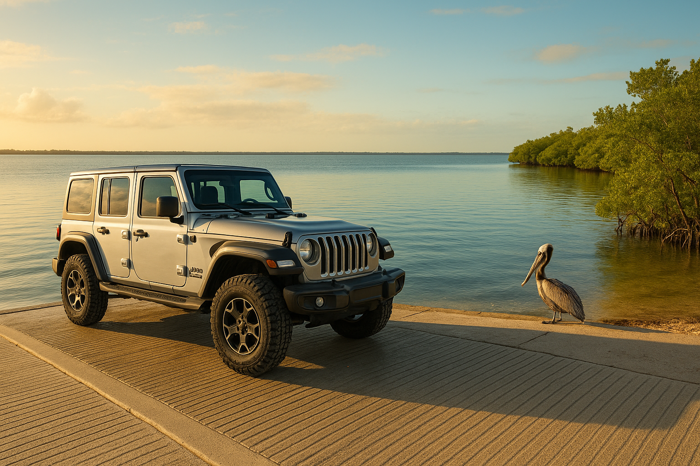
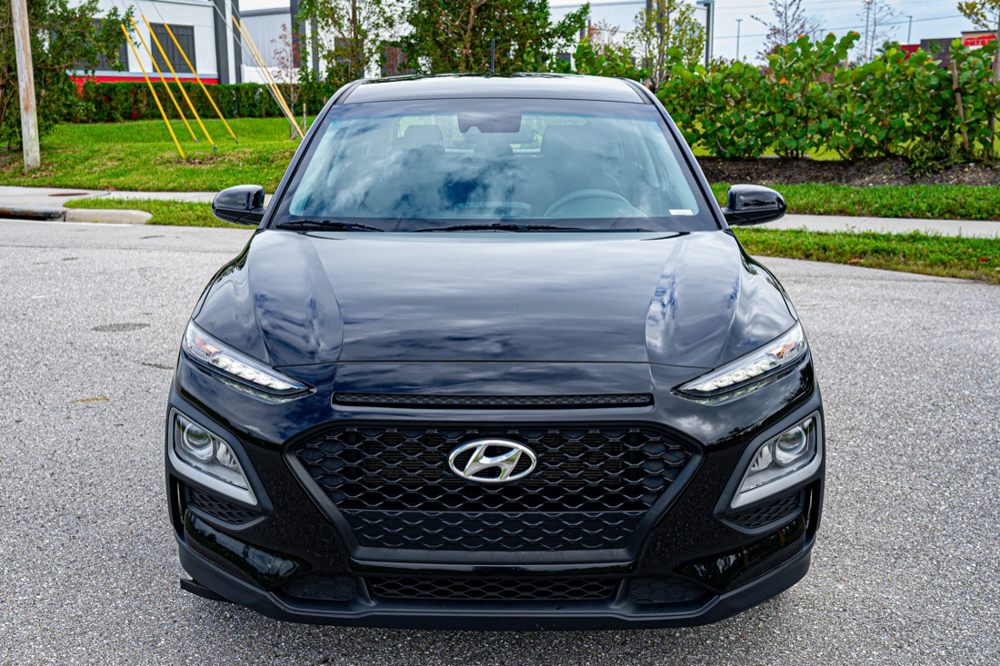
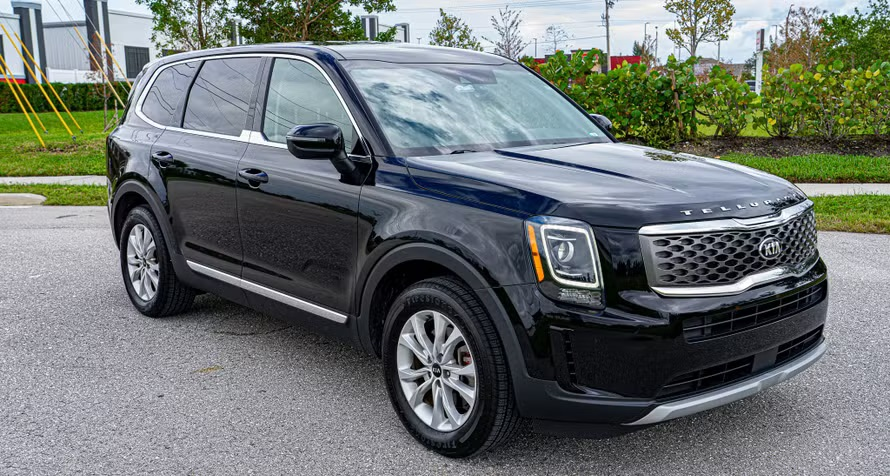
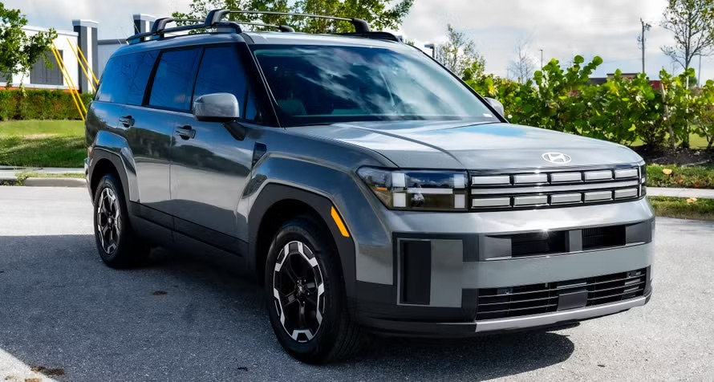
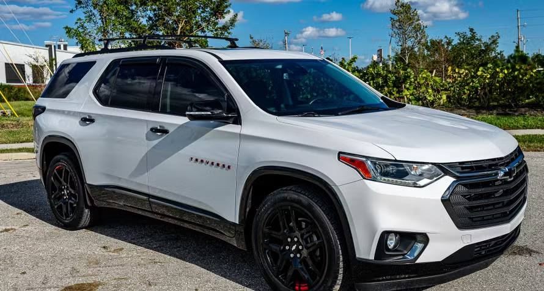
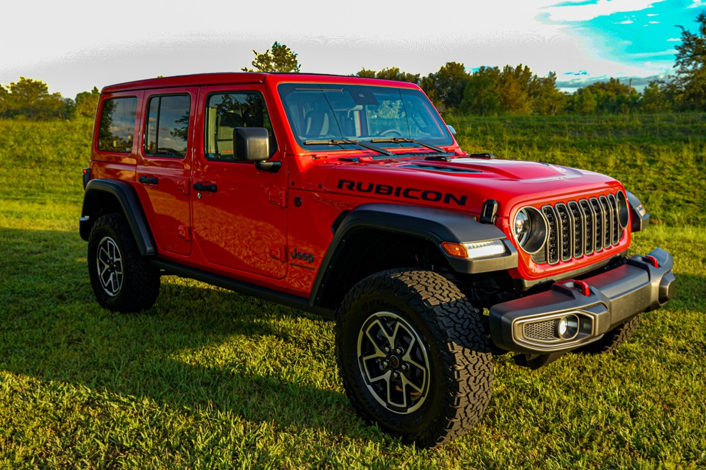
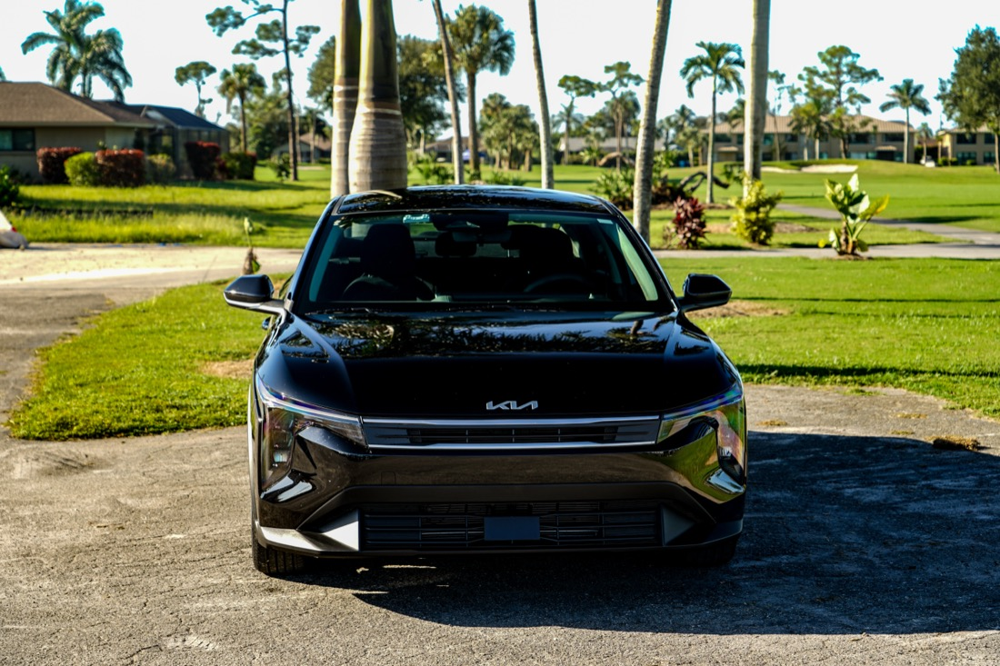

Road-trip guides, local picks, and tips for getting the most out of Southwest Florida — a new post every week.
Just a short drive from Fort Myers, Venice delivers fossil-packed beaches, a walkable downtown, and stunning Gulf sunsets that will make you plan a second trip.
Discover Old Florida magic just off the beaten path — from Matlacha's colorful art village to Pine Island's mango stands, fishing docks, and bayside sunsets.
Cape Coral has more canals than Venice — here's how to spend a perfect day exploring its waterways, scenic bridges, and waterfront dining by car.
From world-class beaches to a charming downtown dining scene, Naples is the perfect SWFL day trip — here's how to make the most of it.

Discover Charlotte Harbor's world-class kayaking, fishing, and wildlife watching — one of Southwest Florida's most rewarding and underrated outdoor escapes.
From LaBelle's old-Florida charm to Alva's riverside tranquility, discover the scenic small towns strung along the Caloosahatchee River — best explored with your own set of wheels.
From ancient cypress forests to farm-fresh flavors, Immokalee Road is one of Southwest Florida's most rewarding — and least-crowded — day-trip drives.

From the lively Times Square pier to quiet bayside sunsets, here's your insider guide to making the most of a perfect day at Fort Myers Beach.

Golf carts, tarpon, and a historic lighthouse — how to spend a laid-back day on Gasparilla Island.

Plan the perfect island day trip — causeway tips, the best shelling beaches, and where to stop for lunch.
Skip the rental counter — here's how airport pickup and delivery works with SafeWheels on Turo.

A neighborhood-by-neighborhood driving route through Cape Coral, Fort Myers, Punta Gorda, and Naples.

Routes, packing list, and wildlife etiquette for an easy day trip from the SWFL coast.
Storm-season driving tips and an emergency car-kit checklist for Florida's rainy months.

A local's guide to waterfront seafood, casual eats, and date-night spots worth the drive.